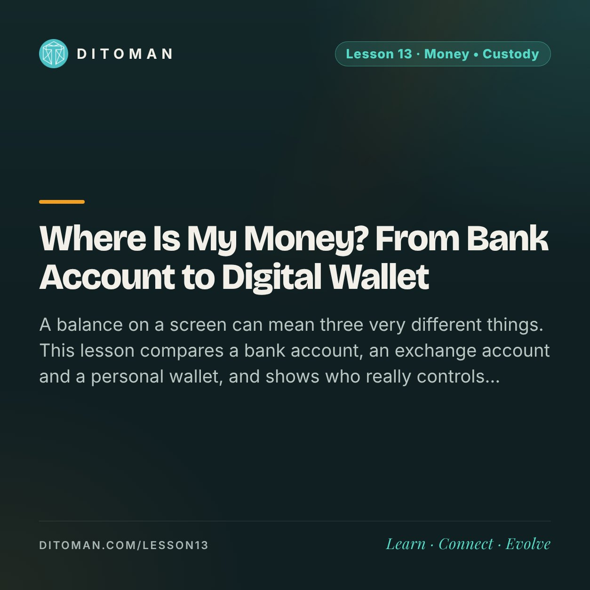

Où est mon argent ? Du compte bancaire au portefeuille numérique
پول من کجاست؟ از حساب بانکی تا کیف پول دیجیتال
Un solde à l'écran peut signifier trois choses très différentes. Cette leçon compare un compte bancaire, un compte sur une plateforme d'échange et un portefeuille personnel, et montre qui contrôle vraiment l'argent dans chaque cas.
عددی که روی صفحه میبینیم میتواند سه معنی کاملاً متفاوت داشته باشد. این درس حساب بانکی، حساب صرافی و کیف پول شخصی را کنار هم میگذارد و نشان میدهد در هر کدام، کنترل واقعی پول دست چه کسی است.
Contenu de la leçon
محتوای درس
Lisez la leçon en anglais ou en persan.
درس را به فارسی یا انگلیسی بخوانید.
Ouvrez une appli bancaire : vous voyez un chiffre. Ouvrez une appli de plateforme : un autre chiffre. Ouvrez un portefeuille crypto : un troisième. Tous ressemblent à « mon argent ». Ce n'est pas la même chose.
La différence tient à une question que l'on peut poser pour tout solde : si je veux cet argent tout de suite, qui doit dire oui ?
01. Un solde bancaire est une promesse
Quand vous déposez de l'argent, il ne reste pas dans une boîte à votre nom. La banque en prête la majeure partie. Ce que vous possédez est une créance : la banque vous doit ce montant et promet de le payer sur demande.
Cette promesse est protégée de plusieurs façons. Les banques sont agréées et supervisées, et de nombreux pays ont une garantie des dépôts qui rembourse les épargnants jusqu'à un plafond si une banque fait faillite. Aux États-Unis, le plafond est de 250 000 dollars par déposant et par banque, et dans l'Union européenne de 100 000 euros. L'Iran a son propre Fonds de garantie des dépôts avec son propre plafond. Au-delà, l'épargnant fait la queue avec les autres créanciers.
02. Un solde sur une plateforme est aussi une promesse
Une plateforme d'échange crypto fonctionne de la même façon sur un point important : les coins sont dans ses portefeuilles, et votre compte montre ce qu'elle vous doit. Vous détenez une créance sur une entreprise.
La différence, c'est la protection qui se trouve derrière. La plupart des comptes sur plateforme n'ont pas de garantie des dépôts. Quand la plateforme FTX s'est effondrée en novembre 2022, les clients ont découvert que des milliards de dollars de leurs actifs manquaient, et ont dû attendre un tribunal des faillites.
Cela ne veut pas dire que toutes les plateformes sont malhonnêtes. Cela veut dire que le solde ne vaut que ce que vaut l'entreprise derrière.
03. Un portefeuille personnel est une clé
Un portefeuille personnel, dit aussi en auto-garde, est différent. Les coins sont inscrits sur la blockchain, et le portefeuille détient la clé privée capable de les déplacer. Personne d'autre n'a à approuver un transfert.
La clé n'est généralement affichée qu'une fois sous forme de phrase de récupération: 12 ou 24 mots ordinaires. Qui détient ces mots contrôle l'argent. Il n'y a pas de bouton « mot de passe oublié » ni de guichet à appeler.
| Compte bancaire | Compte sur une plateforme | Portefeuille personnel | |
|---|---|---|---|
| Ce que vous détenez | Une créance sur la banque | Une créance sur l'entreprise | La clé elle-même |
| Qui approuve un transfert | La banque | La plateforme | Vous seul |
| Si vous oubliez le mot de passe | La banque la réinitialise | La plateforme la réinitialise | Pas de réinitialisation ; seulement la phrase de récupération |
| Si l'établissement fait faillite | Garantie jusqu'à un plafond | Généralement aucune garantie | Ne dépend pas d'un seul |
04. Plus de contrôle, plus de responsabilité
Avec une banque, vous faites confiance à une institution et êtes aidé en cas de problème. Avec un portefeuille personnel, vous vous faites confiance et portez toute la responsabilité.
Si vous perdez la phrase de récupération, l'argent est perdu, même s'il reste visible sur la blockchain.
Si quelqu'un d'autre voit la phrase, ils peuvent vider le portefeuille depuis n'importe où dans le monde, et le transfert est irréversible.
Si vous envoyez à la mauvaise adresse ou sur le mauvais réseau, il n'y a généralement pas de retour possible. La leçon 16 l'explique pas à pas.
05. Des habitudes simples qui évitent la plupart des pertes
Écrivez la phrase de récupération sur papier et gardez-la dans un endroit sûr et sec. Ne la photographiez pas et ne la stockez pas dans une messagerie, un e-mail ou une appli de notes.
Personne de légitime ne vous demandera jamais la phrase. Ni le support, ni une société de portefeuilles, ni Ditoman.
Commencez avec un petit montant et entraînez-vous à recevoir et envoyer avant de déplacer quoi que ce soit d'important.
Utilisez un portefeuille personnel pour les tokens qu'une plateforme ne prend pas en charge. TMN en est un exemple : il doit être reçu dans un portefeuille personnel BNB Smart Chain, comme le montre le guide TMN.
Ce qu'il faut en retenir
Un solde n'est pas toujours de l'argent en main. Demandez qui doit dire oui avant qu'il ne bouge.
Un dépôt bancaire est une créance sur une banque, avec supervision et une garantie jusqu'à un plafond.
Un solde sur une plateforme est une créance sur une entreprise, généralement sans garantie.
Un portefeuille personnel vous donne la clé et toute la responsabilité qui va avec.
Aucune solution n'est la meilleure pour tous. Beaucoup en utilisent plusieurs, chacune pour un usage différent.
اپ بانک را باز میکنیم و یک عدد میبینیم. اپ صرافی را باز میکنیم و عدد دیگری میبینیم. کیف پول کریپتو را باز میکنیم و عدد سومی آنجاست. هر سه شبیه «پول من» هستند، ولی از یک جنس نیستند.
تفاوتشان با یک پرسش روشن میشود که دربارهی هر موجودی میشود پرسید: اگر همین حالا این پول را بخواهم، چه کسی باید اجازه بدهد؟
۰۱. موجودی بانک یک قول است
وقتی پول را به بانک میسپاریم، در جعبهای با اسم ما نمیماند. بانک بیشترِ آن را وام میدهد. چیزی که ما داریم یک «طلب» است: بانک آن مبلغ را به ما بدهکار است و قول داده هر وقت خواستیم بپردازد.
از این قول چند جور محافظت میشود. بانکها مجوز دارند و زیر نظارتاند و بسیاری از کشورها صندوق ضمانت سپرده دارند که اگر بانکی ورشکست شد، تا یک سقف مشخص پول سپردهگذار را برمیگرداند. در آمریکا این سقف برای هر سپردهگذار در هر بانک ۲۵۰ هزار دلار و در اتحادیهی اروپا ۱۰۰ هزار یورو است. ایران هم صندوق ضمانت سپردهها را با سقف خودش دارد. برای مبلغ بالاتر از سقف، سپردهگذار باید کنار بقیهی طلبکارها در صف بماند.
۰۲. موجودی صرافی هم یک قول است
صرافی کریپتو از یک نظر مهم همینطور کار میکند: کوینها در کیف پولهای صرافیاند و حساب ما نشان میدهد صرافی چقدر به ما بدهکار است. ما از یک شرکت طلب داریم.
تفاوت در محافظتی است که پشت این طلب قرار دارد. بیشتر حسابهای صرافی ضمانت سپرده ندارند. وقتی صرافی FTX در نوامبر ۲۰۲۲ فروپاشید، مشتریها فهمیدند میلیاردها دلار از داراییشان سر جایش نیست و باید منتظر دادگاه ورشکستگی بمانند.
این به آن معنی نیست که هر صرافی نادرست است. یعنی موجودی فقط به اندازهی شرکتی که پشتش است اعتبار دارد.
۰۳. کیف پول شخصی یک کلید است
کیف پول شخصی فرق دارد. کوینها روی بلاکچین ثبت شدهاند و کیف پول کلید خصوصی را نگه میدارد؛ کلیدی که میتواند آنها را جابهجا کند. برای انتقال، اجازهی هیچکس دیگری لازم نیست.
این کلید معمولاً یک بار به شکل عبارت بازیابی نشان داده میشود: ۱۲ یا ۲۴ کلمهی معمولی. هر کس این کلمهها را داشته باشد، پول را کنترل میکند. دکمهی «رمز را فراموش کردهام» وجود ندارد و دفتری هم نیست که بشود به آن زنگ زد.
| حساب بانکی | حساب صرافی | کیف پول شخصی | |
|---|---|---|---|
| چه چیزی دارید | طلب از بانک | طلب از شرکت | خودِ کلید |
| چه کسی انتقال را تأیید میکند | بانک | صرافی | فقط خودتان |
| اگر رمز را فراموش کنید | بانک بازنشانی میکند | صرافی بازنشانی میکند | بازنشانی ندارد؛ فقط عبارت بازیابی |
| اگر نهاد ورشکست شود | ضمانت تا یک سقف | معمولاً بدون ضمانت | به نهادی وابسته نیست |
۰۴. کنترل بیشتر، مسئولیت بیشتر
در بانک به یک نهاد اعتماد میکنیم و وقتی مشکلی پیش بیاید کمک میگیریم. در کیف پول شخصی به خودمان اعتماد میکنیم و همهی مسئولیت با خود ماست.
اگر عبارت بازیابی گم شود، پول از دست رفته است، هرچند هنوز روی بلاکچین دیده میشود.
اگر کس دیگری عبارت را ببیند، میتواند از هر جای دنیا کیف پول را خالی کند و آن انتقال برگشت ندارد.
اگر به آدرس یا شبکهی اشتباه بفرستیم، معمولاً راه برگشتی نیست. درس ۱۶ این را قدمبهقدم توضیح میدهد.
۰۵. چند عادت ساده که جلوی بیشتر ضررها را میگیرد
عبارت بازیابی را روی کاغذ بنویسید و جایی امن و خشک نگه دارید. از آن عکس نگیرید و در چت، ایمیل یا اپ یادداشت ذخیرهاش نکنید.
هیچ فرد یا شرکت درستی این عبارت را از شما نمیخواهد. نه پشتیبانی، نه شرکت سازندهی کیف پول، نه دیتومان.
با مبلغ کم شروع کنید و پیش از جابهجا کردن مبلغ مهم، دریافت و ارسال را تمرین کنید.
برای توکنهایی که صرافی پشتیبانی نمیکند، کیف پول شخصی لازم است. TMN یک نمونه است: باید در کیف پول شخصی روی شبکهی BNB Smart Chain دریافت شود؛ راهنمای TMN همین را نشان میدهد.
چه برداشتی کنیم
موجودی همیشه به معنی پول در دست نیست. بپرسید برای جابهجا شدنش چه کسی باید اجازه بدهد.
سپردهی بانکی طلب از بانک است، با نظارت و ضمانت تا یک سقف.
موجودی صرافی طلب از یک شرکت است و معمولاً ضمانتی ندارد.
کیف پول شخصی کلید را به شما میدهد، همراه با همهی مسئولیتش.
هیچ روشی برای همه بهترین نیست. خیلیها از بیش از یک روش استفاده میکنند، هر کدام برای کاری.
Prêt à essayer un portefeuille personnel ?
میخواهید کیف پول شخصی را امتحان کنید؟
Le guide TMN montre, en images, comment ajouter un token à un portefeuille personnel et copier votre adresse. La leçon 17 couvre ensuite les erreurs et arnaques à surveiller.
راهنمای TMN با تصویر نشان میدهد چطور یک توکن را به کیف پول شخصی اضافه کنید و آدرس خودتان را کپی کنید. درس ۱۷ هم اشتباهها و کلاهبرداریهایی را که باید مراقبشان بود مرور میکند.
Notions clés
مفاهیم کلیدی
- Le dépôt comme créance
- Garantie des dépôts
- Garde
- Compte sur une plateforme (dépositaire)
- Portefeuille personnel (auto-conservation)
- Clé privée
- Phrase de récupération
- Transfert irréversible
- سپرده بهعنوان طلب
- ضمانت سپرده
- نگهداری دارایی
- حساب صرافی (امانی)
- کیف پول شخصی
- کلید خصوصی
- عبارت بازیابی
- انتقال برگشتناپذیر
Objectifs d'apprentissage
اهداف یادگیری
- Expliquez pourquoi un solde bancaire est une créance et non de l'argent stocké.
- Comparez la protection derrière un compte bancaire et un compte sur une plateforme.
- Décrivez le rôle d'une clé privée et d'une phrase de récupération.
- Listez trois façons de perdre de l'argent dans un portefeuille personnel.
- Citez les habitudes qui protègent une phrase de récupération.
- توضیح دهید چرا موجودی بانک یک طلب است، نه پول کنارگذاشته.
- محافظت پشت حساب بانکی و حساب صرافی را مقایسه کنید.
- بگویید کلید خصوصی و عبارت بازیابی چه کاری میکنند.
- سه راه از دست رفتن پول در کیف پول شخصی را نام ببرید.
- عادتهایی را که عبارت بازیابی را امن نگه میدارد بشمارید.
Quiz
آزمونک
Voyez ce que vous avez retenu. La réponse est sous chaque question.
ببین چه چیزی در ذهنت مانده. پاسخ زیر هر پرسش آمده است.
Question 1
پرسش ۱
Que possédez-vous quand vous déposez de l'argent à la banque ?
وقتی پول را در بانک میگذارید، چه چیزی دارید؟
A. De l'argent conservé à votre nom
الف. پول نقدی که به اسم شما کنار گذاشته شده
B. Une créance sur la banque
ب. طلب از بانک
C. Une part de la banque
ج. سهمی از بانک
Bonne réponse : B
پاسخ درست: ب
Question 2
پرسش ۲
Qui peut déplacer les coins d'un portefeuille personnel ?
چه کسی میتواند کوینهای یک کیف پول شخصی را جابهجا کند؟
A. Quiconque détient la clé privée ou la phrase de récupération
الف. هر کس کلید خصوصی یا عبارت بازیابی را داشته باشد
B. Le support de l'entreprise du portefeuille
ب. تیم پشتیبانی شرکت سازندهی کیف پول
C. La plateforme où ils ont été achetés
ج. صرافیای که از آن خریده شدهاند
Bonne réponse : A
پاسخ درست: الف
Question 3
پرسش ۳
Quelqu'un du « support » vous demande votre phrase de récupération pour régler un problème. De quoi s'agit-il ?
کسی به اسم «پشتیبانی» برای حل یک مشکل، عبارت بازیابی شما را میخواهد. این چیست؟
A. Une étape de sécurité normale
الف. یک مرحلهی امنیتی معمولی
B. Une arnaque
ب. کلاهبرداری
C. Une obligation légale
ج. یک الزام قانونی
Bonne réponse : B. Personne d'honnête ne la demande jamais.
پاسخ درست: ب. هیچ فرد یا شرکت درستی این عبارت را نمیخواهد.
Question 4
پرسش ۴
Qu'est-ce qui protège généralement un solde sur une plateforme si celle-ci fait faillite ?
اگر صرافی ورشکست شود، معمولاً چه چیزی از موجودی شما محافظت میکند؟
A. Une garantie des dépôts, comme une banque
الف. ضمانت سپرده، مثل بانک
B. La blockchain
ب. بلاکچین
C. En général rien ; vous attendez avec les autres créanciers
ج. معمولاً هیچ؛ کنار بقیهی طلبکارها منتظر میمانید
Bonne réponse : C
پاسخ درست: ج
Question 5
پرسش ۵
Quel est l'endroit le plus sûr pour une phrase de récupération ?
امنترین جا برای عبارت بازیابی کجاست؟
A. Une photo dans la galerie du téléphone
الف. عکسی در گالری گوشی
B. Un message à vous-même dans une messagerie
ب. پیامی به خودتان در یک پیامرسان
C. Sur papier, en lieu sûr
ج. روی کاغذ، در جایی امن
Bonne réponse : C
پاسخ درست: ج
Sources
منابع
- FDIC : assurance des dépôts (États-Unis)
- Commission européenne : systèmes de garantie des dépôts
- RTE News : le fondateur de FTX condamné pour la perte des fonds des clients (28 mars 2024)
- ethereum.org : portefeuilles, clés et phrases de récupération
Les plafonds de garantie changent. Vérifiez le plafond actuel auprès de l'organisme de garantie des dépôts de votre pays.
سقف ضمانت سپرده تغییر میکند. سقف فعلی را از نهاد ضمانت سپرده در کشور خودتان بپرسید.
با هم دنبال میکنیمSuivez-nous
Les nouvelles leçons sont d'abord annoncées sur les canaux de Ditoman.
درسهای تازه اول در کانالهای دیتومان معرفی میشوند.